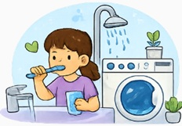
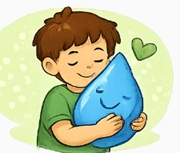
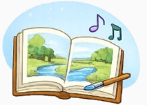
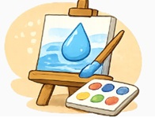
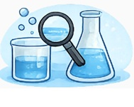
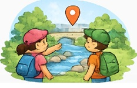
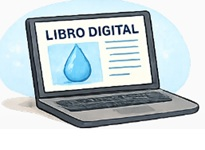
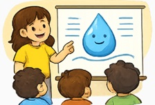

Criterios de evaluación y tareas
En la siguiente tabla se encuentran las distintas tareas con sus correspondientes criterios de evaluación que se llevarán a cabo en la situación de aprendizaje.
| TAREA | CRITERIO DE EVALUACIÓN | |
|
Identificar los usos del agua en la vida cotidiana.  |
3.1 Realizar actividades relacionadas con el autocuidado y el cuidado del entorno con una actitud respetuosa, mostrando autoconfianza e iniciativa. | |
|
Desarrollar hábitos de cuidado del agua.  |
3.1 Mostrar una actitud de respeto, cuidado y protección hacia el medio natural y los animales, identificando el impacto positivo o negativo que algunas acciones humanas ejercen sobre ellos. | |
|
Cuentos y canciones relacionadas con el agua.  |
3.5 Interpretar propuestas dramáticas y musicales, utilizando y explorando diferentes instrumentos, recursos o técnicas. 5.3 Participar en actividades de aproximación a la literatura infantil, tanto de carácter individual, como en contextos dialógicos y participativos, descubriendo, explorando y apreciando la belleza del lenguaje literario. |
|
|
El agua en el arte.  |
3.4 Elaborar creaciones plásticas, explorando y utilizando diferentes materiales y técnicas y participando activamente en el trabajo en grupo cuando se precise. | |
|
Juegos y experimentos: trasvases, flotación, disolución.  |
2.3 Plantear hipótesis acerca del comportamiento de ciertos elementos o materiales, verificándolas a través de la manipulación y la actuación sobre ellos. | |
|
Salida al entorno. Búsqueda de lugares con agua en la localidad.  |
3.3 Establecer relaciones entre el medio natural y el social a partir del conocimiento y la observación de algunos fenómenos naturales y de los elementos patrimoniales presentes en el medio físico. | |
|
Elaboración del libro digital.  |
1.4 Interactuar con distintos recursos digitales, familiarizándose con diferentes medios y herramientas digitales. | |
|
Exposición final de los aprendizajes.  |
3.1 Hacer un uso funcional del lenguaje oral, aumentando su repertorio lingüístico y construyendo progresivamente un discurso más eficaz, organizado y coherente en contextos formales e informales. |